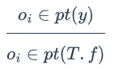
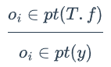
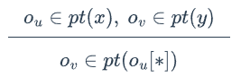
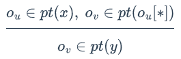
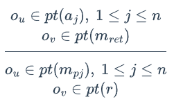
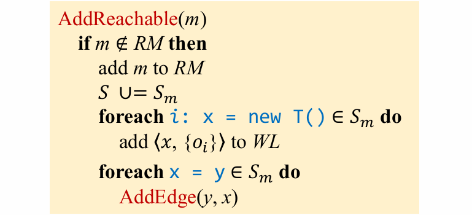
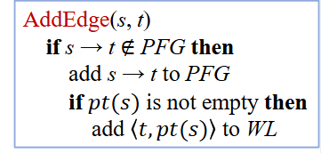
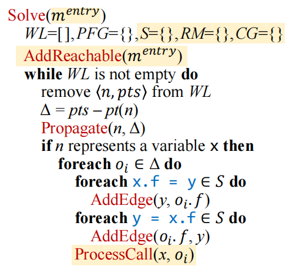
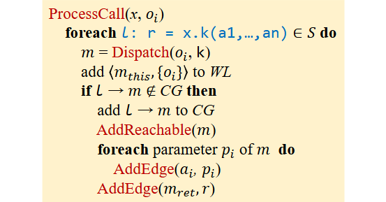

课程网站为Static Program Analysis | Tai-e
本次实验为作业 5：非上下文敏感指针分析
作业目标
- 为 Java 实现非上下文敏感的指针分析。
- 为指针分析实现一个调用图的实时构建算法。
在本次作业中，我们将在 Tai-e 上为 Java 实现一个非上下文敏感的指针分析，并在指针分析的过程中实时构建调用图。如果实现正确，该调用图会比用类层次结构分析（CHA）建立的更加精确。
在本次作业中，我们将学习如何处理课上没有涉及的一些 Java 特性，即静态字段、数组和静态方法，这样我们的指针分析就可以处理 Java 中所有类型的指针了。
新的分析规则
在这一节中，我们引入新的指针分析规则来处理静态字段、数组索引和静态方法调用。
静态字段的处理很简单：我们只需要在静态字段和变量之间传值。我们用 T.f 表示静态字段 T.f 的指针，然后定义如下规则来处理静态字段的 store 和 load：
| 类型 | 语句 | 规则 | PFG 边 |
|---|---|---|---|
| Static Store | T.f = y |  | T.f ← y |
| Static Load | y = T.f |  | y ← T.f |
常规指针分析不区分对不同数组索引（位置）的 load 和 store。假设 oi 代表一个数组对象，那么我们用 oii[∗] 表示一个指向数组中所有对象的指针（无论保存在数组的什么位置）。基于这样的处理，我们定义了数组 store 和 load 的规则：
| 类型 | 语句 | 规则 | PFG 边 |
|---|---|---|---|
| Array Store | x[i] = y |  | ou[*] ← y |
| Array Load | y = x[i] |  | y ← ou[*] |
静态方法的处理与实例方法大体相同，除了（1）我们不需要在 receiver object 上进行 dispatch 以解析（resolve）出被调用的方法，（2）我们不需要传 receiver object。因为静态方法的处理不需要考虑 receiver object，因此它的处理规则也比实例方法更简单：
| 类型 | 语句 | 规则 | PFG 边 |
|---|---|---|---|
| Static Call | r = T.m(a1,...,an) |  | a1 → mp1 ... an → mpn r ← mret |
实现
实现 Solver 类
我们已经在 Solver.initialize() 中初始化了 worklist、指针流图和调用图，并将它们存在 Solver 的字段 worklist、pointerFlowGraph 和 callGraph 中，这样我们就可以操作它们了。当我们建立调用图时，可以使用前面作业中介绍的 DefaultCallGraph 的 API 来修改调用图。主要实现以下五个API。
void addReachable(JMethod)
这个方法实现了 AddReachable 函数。
这里要再了解七个类，Var 、JField 、Obj 、HeapModel 、PointsToSet 、Pointer 、PointerFlowGraph 。其中，Var 在之前已经见过，不过这里提供了一些方便的API来查找相关语句。例如，假设我们在分析下面的代码片段：
x = y;
x.h = a;
x.g = z;
a = x.f;
b = y.f;
c = x.m();
d[i] = c;
e = d[i];PointerFlowGraph 表示程序的指针流图。它还维护着从变量、静态字段、实例字段、数组索引到相应指针（即 PFG 节点）的映射，因此我们可以利用这个类的 API 获得各种指针。
- 不要忘记在该方法中处理静态字段 loads/stores 和静态方法调用。
- 可以通过如下方法获得 LoadField/StoreField 语句要 load/store 的字段：
LoadField stmt = ...; JField field = stmt.getFieldRef().resolve(); - 为了实时建立调用图，我们需要解析方法调用的被调用者。出于方便，提供了 Solver.resolveCallee(Obj,Invoke) 来解析 Java 中静态调用、虚调用、接口调用和特殊调用（static, virtual, interface, and special invocations）的被调用者。
- 在 addReachable() 中，对于不同种类的语句，我们需要使用不同的逻辑来处理。实现这种需求的一个合理方式是访问者模式。Tai-e 的 IR 天然支持访问者模式。具体来说，Tai-e 提供了 pascal.taie.ir.stmt.StmtVisitor 类，这是所有 Stmt 访问者的通用接口，它为所有种类的语句都声明了访问操作。另外，Stmt 的非抽象子类都实现了 accept(StmtVisitor) 方法，因此它们可以回调来自具体访问者的访问操作。
在 Solver 中，我们为 Stmt 访问者提供了代码框架（即内部类 StmtProcessor），并在 initialize() 中创建了它的实例，并将该实例存在字段 stmtProcessor 中。如果你选择通过访问者模式实现 addReachable() 的逻辑，那么应该在类 stmtProcessor 中实现相关的 visit(…) 方法，并使用它来处理可达方法中的语句。在这次作业中，visit(…) 方法的返回值被忽略，因此在实现 visit(…) 方法时只需要返回 null。
private void addReachable(JMethod method) {
// TODO - finish me
if(!callGraph.contains(method)){
// add m to RM
callGraph.addReachableMethod(method);
// S ∪= Sm
for(Stmt s : method.getIR().getStmts()){
// 交给访问者模式处理
s.accept(stmtProcessor);
}
}
}class StmtProcessor implements StmtVisitor<Void>
这里是对 addReachable 中的不同的 stmt 类型的处理
private class StmtProcessor implements StmtVisitor {
// TODO - if you choose to implement addReachable()
// via visitor pattern, then finish me
@Override
public Void visit(New stmt) {
// new 语句
Obj o = heapModel.getObj(stmt);
VarPtr varPtr = pointerFlowGraph.getVarPtr(stmt.getLValue());
workList.addEntry(varPtr,new PointsToSet(o));
return null;
}
@Override
public Void visit(Copy stmt) {
// 赋值语句
VarPtr lVarPtr = pointerFlowGraph.getVarPtr(stmt.getLValue());
VarPtr rVarPtr = pointerFlowGraph.getVarPtr(stmt.getRValue());
addPFGEdge(rVarPtr,lVarPtr);
return null;
}
@Override
public Void visit(LoadArray stmt) {
// 数组 load
return null;
}
@Override
public Void visit(StoreArray stmt) {
// 数组 store
return null;
}
@Override
public Void visit(LoadField stmt) {
if(stmt.isStatic()){
// 这里只对静态处理
// 字段 load
VarPtr lVarPtr = pointerFlowGraph.getVarPtr(stmt.getLValue());
StaticField rStaticField = pointerFlowGraph.getStaticField(stmt.getFieldRef().resolve());
addPFGEdge(rStaticField,lVarPtr);
}
return null;
}
@Override
public Void visit(StoreField stmt) {
if(stmt.isStatic()){
// 字段 store
VarPtr rVarPtr = pointerFlowGraph.getVarPtr(stmt.getRValue());
StaticField lStaticField = pointerFlowGraph.getStaticField(stmt.getFieldRef().resolve());
addPFGEdge(rVarPtr,lStaticField);
}
return null;
}
@Override
public Void visit(Invoke stmt) {
// 这里类似于 ProcessCall 的处理，不过是静态方法
if(stmt.isStatic()){
// 同样这里只对静态方法调用处理
Var lVar = stmt.getLValue();
JMethod m = resolveCallee(null,stmt);
Edge edge = new Edge<>(CallKind.STATIC,stmt,m);
if(callGraph.addEdge(edge)){
// 如果添加边成功，说明边不在 CG 中
addReachable(m);
InvokeExp invoke = stmt.getInvokeExp();
for(int i = 0; i < invoke.getArgCount(); i++){
// 参数到参数的传递
VarPtr aPtr = pointerFlowGraph.getVarPtr(invoke.getArg(i));
VarPtr pPtr = pointerFlowGraph.getVarPtr(m.getIR().getParam(i));
addPFGEdge(aPtr,pPtr);
}
}
if(lVar != null){
// 有返回值对返回值做相应处理
for(Var ret : m.getIR().getReturnVars()){
VarPtr retPtr = pointerFlowGraph.getVarPtr(ret);
VarPtr lPtr = pointerFlowGraph.getVarPtr(lVar);
addPFGEdge(retPtr,lPtr);
}
}
}
return null;
}
} void addPFGEdge(Pointer,Pointer)
这个方法实现了 AddEdge 函数。
private void addPFGEdge(Pointer source, Pointer target) {
// TODO - finish me
if(pointerFlowGraph.addEdge(source,target)){
if(!source.getPointsToSet().isEmpty()){
// pt(s) 不为空就加入 WL
workList.addEntry(target,source.getPointsToSet());
}
}
}void analyze()
这个方法实现了 Solve 函数的主要部分，即 while 循环部分。
private void analyze() {
// TODO - finish me
while(!workList.isEmpty()){
WorkList.Entry entry = workList.pollEntry();
Pointer n = entry.pointer();
PointsToSet pts = entry.pointsToSet();
PointsToSet delta = propagate(n, pts);
if(n instanceof VarPtr varPtr){
Var v = varPtr.getVar();
for(Obj o : delta){
for(StoreField storeField : v.getStoreFields()){
VarPtr rVarPtr = pointerFlowGraph.getVarPtr(storeField.getRValue());
InstanceField field = pointerFlowGraph.getInstanceField(o,storeField.getFieldRef().resolve());
addPFGEdge(rVarPtr,field);
}
for(LoadField loadField : v.getLoadFields()){
VarPtr lVarPtr = pointerFlowGraph.getVarPtr(loadField.getLValue());
InstanceField field = pointerFlowGraph.getInstanceField(o,loadField.getFieldRef().resolve());
addPFGEdge(field,lVarPtr);
}
for(StoreArray storeArray : v.getStoreArrays()){
VarPtr rVarPtr = pointerFlowGraph.getVarPtr(storeArray.getRValue());
ArrayIndex index = pointerFlowGraph.getArrayIndex(o);
addPFGEdge(rVarPtr,index);
}
for(LoadArray loadArray : v.getLoadArrays()){
VarPtr lVarPtr = pointerFlowGraph.getVarPtr(loadArray.getLValue());
ArrayIndex index = pointerFlowGraph.getArrayIndex(o);
addPFGEdge(index,lVarPtr);
}
processCall(v,o);
}
}
}
}PointsToSet propagate(Pointer,PointsToSet)
这个方法合并了算法中的两个步骤。它首先计算差集（Δ=pts−pt(n)），然后将 pts 传播到 pt(p) 中。它返回 Δ 作为调用的结果。
private PointsToSet propagate(Pointer pointer, PointsToSet pointsToSet) {
// TODO - finish me
PointsToSet ptn = pointer.getPointsToSet();
PointsToSet delta = new PointsToSet();
// 计算 Δ
for(Obj o : pointsToSet){
if(!ptn.contains(o)){
ptn.addObject(o);
delta.addObject(o);
}
}
if(!delta.isEmpty()){
for(Pointer p : pointerFlowGraph.getSuccsOf(pointer)){
// 传播 n 的新指向关系给他 PFG 上的后继
workList.addEntry(p,pointsToSet);
}
}
return delta;
}void processCall(Var,Obj)
这个方法实现了 ProcessCall 函数。
private void processCall(Var var, Obj recv) {
// TODO - finish me
for(Invoke invoke : var.getInvokes()){
// 不用判断调用类型，这里都是非静态方法
JMethod m= resolveCallee(recv,invoke);
VarPtr thisPtr = pointerFlowGraph.getVarPtr(m.getIR().getThis());
workList.addEntry(thisPtr,new PointsToSet(recv));
Edge edge = null;
// 加边的类型
if(invoke.isDynamic()){
edge = new Edge<>(CallKind.DYNAMIC,invoke,m);
}else if(invoke.isInterface()){
edge = new Edge<>(CallKind.INTERFACE,invoke,m);
}else if(invoke.isVirtual()){
edge = new Edge<>(CallKind.VIRTUAL,invoke,m);
}else if(invoke.isSpecial()){
edge = new Edge<>(CallKind.SPECIAL,invoke,m);
}else {
edge = new Edge<>(CallKind.OTHER,invoke,m);
}
if(callGraph.addEdge(edge)){
addReachable(m);
InvokeExp invokeExp = invoke.getInvokeExp();
for(int i = 0; i < invokeExp.getArgCount(); i++){
// 参数到参数的传递
VarPtr aPtr = pointerFlowGraph.getVarPtr(invokeExp.getArg(i));
VarPtr pPtr = pointerFlowGraph.getVarPtr(m.getIR().getParam(i));
addPFGEdge(aPtr,pPtr);
}
Var lVar = invoke.getLValue();
if(lVar != null){
// 有返回值对返回值做相应处理
for(Var ret : m.getIR().getReturnVars()){
VarPtr retPtr = pointerFlowGraph.getVarPtr(ret);
VarPtr lPtr = pointerFlowGraph.getVarPtr(lVar);
addPFGEdge(retPtr,lPtr);
}
}
}
}
}总结
这一次的任务量感觉不是很大，主要是前期的学习需要较长的时间，加上需要了解学习各种类并能找到要用的API，最终把他们都结合到一起这个过程比较困难。这就不得不说 ide 内部的提示功能确实很重要，虽然有时候不太熟悉有点忘记，但是大概知道要做什么再配合上这样的提醒功能真的事半功倍。提交的时候看了一下这个 Assigment 的成功率也确实很高。